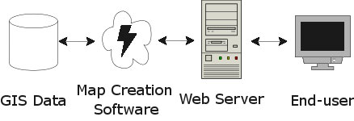
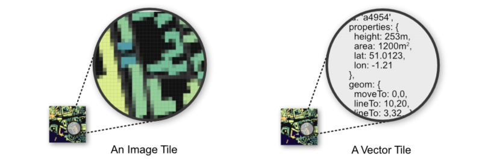

Vector tiles
De toekomst van open source web mapping
Niene Boeijen, Webmapper
Almere, 11 jul 2018
Niene Boeijen


Propaedeuse Kunstacademie
MSc Geo Information Science
Stage Geo Web Visualisatie
Maptime Amsterdam & Utrecht
Web Cartograaf
What the map can be
Wij maken interactieve kaarten en datavisualisaties. Onze expertise is open {source; data; standaarden}. Onze kracht is het combineren van cartografie en webtechnologie.
Utrecht, The Netherlands
Deze presentatie
- Web maps
- van raster naar vector
- vector tiles
- voorbeelden
What is a web map?
Data, tiles, styles and servers.
View in a browser, scroll, pan, zoom.

openstreetmap.org
google.com/maps
a little History
Digital maps
GIS software
GIS on the Web is not user friendly..
1996 Mapquest first with a web service!

But really slow to load..
2004 Endoxon found a way for quick online mapping! map.search.ch
2005 Google Maps took over!
The solution?
Tiles!
Tiles
All tiles 256x256 pixels
Same grid, same boundaries
All these little tiles load way faster than one big map!
Seamless and fast
We call those slippy maps
Zoom levels
Each zoom level has its own set of tiles!
Zoom level 0: 1 tile for the whole world.
Increases exponentially...
Zoom level 1: 4 tiles
Zoom level 2: 16 tiles
etc.
 Map with tile bounds
Map with tile bounds
Styling & Serving tiles
Tiles are styled and rendered in advance
Tiles are just images on the web
http://tile.openstreetmap.org/5/16/10.png
{kind=link}
/z/x/y

Nadelen Raster tegels
-
Rendering wordt op server gedaan
-
Tegel set is vast-gezet: static
-
Veel opslag ruimte nodig!
-
Meerdere visualisaties = Meerdere tegel sets
-
Gebruiker kan niks aanpassen
-
Geen interactie met objecten mogelijk
-
Object informatie moet los opgevraagd worden in database
van Raster naar Vector
Vector Tile

Binary encoded Protocol Buffers
Alleen data! Geen stijl kleur
Zelfde tegel schema als raster tegels
256 x 256 px
Versimpelde geometrie
WebGL
Rendering gebeurt in de browser
Graphics Processing Unit(GPU)
widely supported in modern browsers
++ Rotating tilting
++ Smooth/inifinte zooming
Voordelen Aanbieder (Server side)
-
Gecomprimeerde data, klein en snel!
-
Snelle productie, minder opslag
-
1 tegel set in opslag
-
Attribuut data beschikbaar in browser, minder database request!
-
Rendering stijl aan client-side
-
Minder druk op server-side
Voordelen gebruiker (client side)
-
Vector = hoge resolutie, zelfs bij ver inzoomen
-
1 tegel set- meerder stijlen mogelijk!
-
Stijl kan je zelf aanpassen!
-
Stijlen in json of js - geen moeilijke SLD's meer nodig
Voorbeeld
verelijking raster vs vector
http://pdokviewer.pdok.nl/ http://geodata.nationaalgeoregister.nl/beta/topotiles-viewer/Standaarden
Mapbox Vector Tile Standard.Based on the binary protocal buffer (.pbf) from Google.
Standard already used by Esri.
Web Mercator projection, Google tiling scheme.
Bestands Formaat
.mvt - .pbf
.mbtiles
Waar komen ze vandaan?
Download
Online host services
Zelf maken & Zelf hosten
Host Services
Zelf serveren!
Eigen data of OSM data

OpenMapTile Server (tileserverGL)
More command line tools
Hoe te visualiseren?
Voorbeelden!
Kadaster PDOK
BRT + BGT
Zoom level 0 tot 16
1 tegel set, meerder visualisaties!
https://github.com/PDOK/vectortiles-bgt-brt
"http://geodata.nationaalgeoregister.nl/beta/topotiles/{z}/{x}/{y}.pbf"Datalab Amsterdam

"https://t{s}.data.amsterdam.nl/wm/{z}/{x}/{y}.pbf"WebGL voor 3D effecten!
Online voorbeelden
MapboxGL.js

mapboxgl.accessToken = 'yourowntoken';
var map = new mapboxgl.Map({
container: 'map-container',
style: 'style.json',
hash: true,
zoom: 11,
pitch: 60,
bearing: 62.4,
center: [ 4.8, 52.4]
});
JSON
JavaScript Object Notation

style.json
{
"version": 8,
"name": "Mijn eigen Stijl",
"sprite": "url",
"glyphs": "url/{fontstack}/{range}.pbf",
"sources": {...},
"layers": [
{
"id": "background",
"type": "background",
"paint": { "background-color":"#FFFFFF" }
},
{...}
]
}
Vector Tile 3
HD vector tiles
Deze presentatie |
nieneb.github.io/foss4gNL_vector_tiles/ |
Workshop |
github.com/nieneb/foss4gNL_vector_tiles/wiki |
Workshop |
github.com/maptime-ams/vector-tiles-workshop/wiki |
Thank you!
Niene Boeijen
niene@webmapper.net